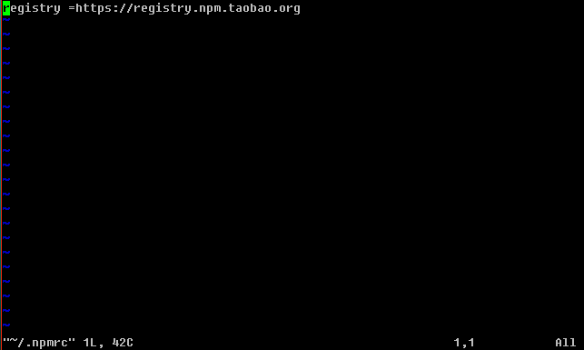

刚一申请到域名和服务器，第一件事情便是架设博客。当时想找一个方便省事的博客框架，于是看到当时吹得天花乱坠的Wordpress，便不小心掉进了大坑。还没写几篇文章，便已经开始遭遇各种麻烦。最难忍的一点就是不知道为何载入极慢。网上说是由于自带google字库的原因，可是下载了好几个去字库插件变着花样试却都是徒劳（你可以想象在设置页面中顶着30秒以上一页的载入速度在插件页面苦苦寻找并一个一个尝试的滋味吗，那大概是地狱的滋味了）。而博客也因此处于长时间停更的状态（实在是没有心情写了）。
于是乎，趁着一次误删除操作的机会（把主页所在的文件夹整一个删掉了），我踏上了寻找更好的博客框架之路。于是乎，驻足在了HEXO面前。
之前看到很多有关于hexo的教程与内容，基本上都是关于如何在Github Pages中的部署，在服务器中部署的内容极少，所以一直没有认真地考虑过hexo的可行性。于是抱着试一试的态度重新审视了一遍hexo，发现他原来是一个生成静态站点的工具。而因为nginx拥有对静态页面的处理的特殊加成，于是两者一拍即合，浑然天成，当即决定使用hexo作为新的博客框架。
Hexo是一款由Node.js开发的博客框架。它的安装需要进行以下步骤：
- 安装Node.js
- 安装Hexo
安装Node.js
安装之前，我们需要更新yum源：
1 | $ yum -y update |
接下来，从官网下载Node.js的最新源码来进行编译安装。
首先我们需要安装用来进行编译操作的Development Tools：
1 | $ yum -y groupinstall "Development Tools" |
接下来，进入用来编译源码的目录：
1 | $ cd /uer/local/src |
现在可以准备开始下载Node.js的源码了：
1 | $ wget http://nodejs.org/dist/node-latest.tar.gz |
等待下载完毕后，即可解压文件到当前目录：
1 | $ tar zxf node-*.tar.gz |
准备进行编译：
1 | $ ./configure |
等待几分钟配置好后，输入命令开始进行漫长的编译：
1 | $ make |
期间编译的时间极长，伴随着满载的CPU和不断弹出的警告信息（是真的，满屏幕的警告信息）等待大概40~50分钟左右，编译结束,
开始进行正式安装Node.js：
1 | $ make install |
安装的时间比编译时间要短一些，大概10分钟左右。安装完毕后，可以输入以下指令检查是否正确安装：
1 | $ node --version |
安装Hexo
Hexo使用的是npm进行安装。由于npm源的原因，在国内直接使用npm进行安装整个下载过程将会极其缓慢，苦不堪言。所以我在这里使用淘宝npm镜像来进行安装。
可以通过以下的方法更换npm使用的源：
1 | $ vim ~/.npmrc |
使用vim打开该文件后，按i添加以下内容，输入:wq退出：
1 | registry = https://registry.npm.taobao.org |

配置好源以后，我们可以开始安装hexo了：
1 | npm install hexo-cli -g |
安装完毕以后，选择一个目录，使用以下指令对这个目录进行hexo初始化：（在这里，我选择/hexo作为我的hexo目录）
1 | $ hexo init /hexo |
输入指令后，hexo开始往该目录下载hexo站点所需要的初始化文件。等待初始化完成后，这个目录就成为了我们的hexo站点目录了。当然，也可以在多个不同的地方建立不同的hexo站点目录，而所有不同地方生成的站点目录都是相互独立的。这有点像project的感觉。而所有对站点进行的操作都需要cd到站点所在的目录下进行。
那么我们现在进入/hexo目录内一探究竟：
1 | $ cd /hexo |

可以看到，/hexo目录新增了许多文件。主要目录结构如下：
1 | . |
_config.yml
这是hexo站点的配置文件。具体的配置可以查看官网文档。
为了方便生成，我在配置文件中将public_dir的路径直接设置在nginx的网站根目录下。具体效果可以看看我写的另一篇文章（正在写）。
配置好后输入以下指令开始生成静态页面文件：
1 | $ hexo g |
于是乎，新的博客站点已经建立好了。
###如何写文章
在本地使用任何支持Markdown格式的文本编辑器（个人推荐MarkdownPad2）建立一个.md文档来写文章。在文件的头部还需要填写一些信息，比如现在这篇文章就是使用如下的信息：
1 | --- |
文章写完后，将写好的.md文件上传至<hexo站点目录>/source/_posts，然后在站点目录下使用hexo g指令即可生成新的站点。整个站点将在指定的public_dir中生成。（这也就是我选择将该路径直接设置在网站根目录下的原因）